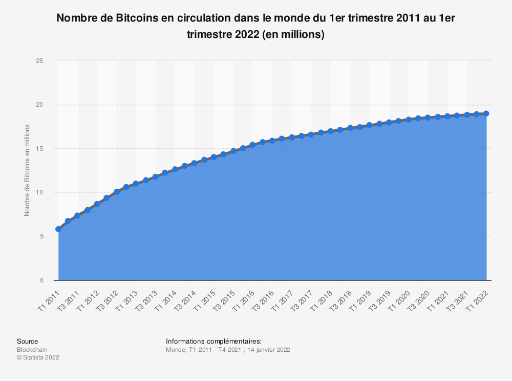

Le mode de création du Bitcoin
Bitcoin est une amélioration du concept de b-money, imaginé par Wei Dai en 1999, et de bitgold, décrit
en 2005 par Nick Szabo. Le bitcoin résout en particulier le problème crucial du modèle de confiance
:
les serveurs considérés comme sérieux votent avec leur puissance de calcul pour déterminer la chaîne
de
transaction légitime. Dans b-money, les serveurs étaient supposés verser un dépôt de garantie selon
un
mécanisme peu explicite. L'idée d'utiliser une chaîne de preuves de calcul fut avancée dans le
projet
bitgold bien que Nick Szabo ne proposât d'utiliser qu'une majorité d'adresses pour établir la
légitimité
d'une chaîne de transactions, ce qui laissait entier le problème du contrôle du nombre des
adresses.
Wikipédia
Le bitcoin est émis sur le protocole de blockchain. Ce protocole permet à cette cryptomonnaie de transmettre et stocker des informations et transactions de manière transparente.
La place du Bitcoin parmi les titres spéculatifs
Le Bitcoin a réellement explosé en fin d'année 2020 jusqu'à début 2021 en passant pour la première fois
la barre des 35 000 $ en prenant donc 400% de sa valeur antérieure.
De nombreux facteurs expliquent ce boom, tout d'abord, le marché du Bitcoin est relativement
étroit, le volume des échanges journalier atteint souvent les 50 milliards de dollars. De plus, lors de
le brutale augmentation du Bitcoin, la demande excédait largement l'offre, rendant donc cette
cryptomonnaie beaucoup plus attrayante en terme de spéculation.
Ainsi, le bitcoin est donc devenu la cryptomonnaie la plus rependu dans le monde, avec un plafond encore jamais atteint par les autres cryptomonnaie (tel que l'ethereum)
La circulation du Bitcoin
Concrètement, comment est ce que le Bitcoin est distribué dans le monde entier ?
Le Bitcoin possède une liste complète des transactions qui ont été effectuées entre tous les utilisateurs. Plusieurs transactions sont mises ensemble dans un bloc et plus le temps passe, plus les blocs s’allongent. À chaque première transaction d’un bloc, l’ordinateur qui le crée recevra un Bitcoin pour le remercier de participer au bon fonctionnement du système. Étant donné que la longueur des blocs grossit de plus en plus, cela signifie qu’il y aura de moins en moins de Bitcoins qui seront générés.
La fonction ainsi définie est une courbe logarithmique qui va atteindre à terme environs 21 millions de Bitcoins. C’est le montant total maximum de Bitcoins qui seront disponibles à terme sur ce système. La génération de nouveaux bitcoins peut être schématisée ainsi : 50 bitcoins sont générés toutes les 10 minutes pendant les 4 premières années, puis cette valeur passe à 25 BTC toutes les 10 minutes durant les 4 années suivantes (à partir de novembre 2012), et continue d’être divisée par deux tous les 4 ans environ (en réalité tous les 210 000 blocs de transactions) jusqu’à atteindre le nombre maximum aux alentours de 2140.
Aussi, ce mécanisme de blocs est uniquement présent grâce au minage, en effet, Le minage est un système de consensus distribué qui est utilisé pour confirmer les transactions en attente en les incluant dans la chaine de blocs. Il impose un ordre chronologique dans la chaine de blocs, protège la neutralité du réseau et permet à différents ordinateurs d'être en accord sur l'état du système. Pour être confirmées, les transactions doivent être incluses dans un bloc qui doit correspondre à des règles cryptographiques très strictes qui seront vérifiées par le réseau.
Le minage de cryptomonnaie désigne le fait de résoudre des calculs mathématiques à l'aide de matériel informatique tel que les cartes graphiques ou les processeurs. Ainsi, tout le monde qui possède un ordinateur avec une carte graphique récente peut se mettre éventuellement au minage. Or, le minage devient de plus en plus compliqué dû au nombre croissant de personnes actives en minage mais aussi à cause de l'influence du Bitcoin sur l'écologie. Cf: inconvénients